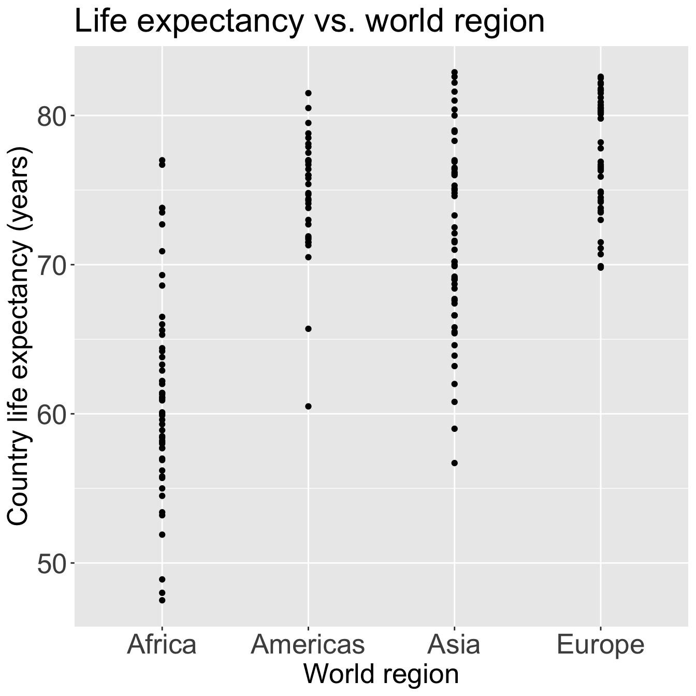

Code
ggplot(gapm2, aes(x = four_regions, y = LifeExpectancyYrs)) +
geom_point() +
labs(x = "World region",
y = "Country life expectancy (years)",
title = "Life expectancy vs. world region") +
theme(axis.title = element_text(size = 20),
axis.text = element_text(size = 20),
title = element_text(size = 20))